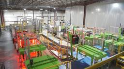

Digital Commerce 360
https://www.digitalcommerce360.com/
Digital Commerce 360 is a global leader in ecommerce research and media, with over 20 years of experience in reporting and analysis.
フィード
GME acquires regional rival Commercial Supply Co.
Digital Commerce 360
Two Midwestern workplace safety distributors have joined forces, with GME Supply acquiring Commercial Supply Co. GME Supply, a Columbia, Missouri-based distributor of workplace safety gear and equipment, announced the deal, which will welcome its Des Moines, Iowa-based competitor into its portfolio. CSC is a distributor that primarily serves construction and industrial contractors. The deal extends GME’s […]The post GME acquires regional rival Commercial Supply Co. appeared first on Digital Commerce 360.
17時間前
Bark revenue falls despite commerce growth resuming in Q2
Digital Commerce 360
Bark net revenue and direct-to-consumer (DTC) revenue both declined in the company’s fiscal second quarter ended Sept. 30. However, the seller of pet products managed to reignite growth for its commerce revenue — which comes from sales with retail partners — and prepare the sale of its dog-focused airline as it sought to correct course […]The post Bark revenue falls despite commerce growth resuming in Q2 appeared first on Digital Commerce 360.
2日前
CVS Health to split retail pharmacy and health care service into two companies
Digital Commerce 360
CVS Health announced that it plans to separate its retail pharmacy chain from its health care insurance and services business units into two distinct companies. The move comes as retail pharmacies broadly face competition and other pressures. It would walk back two decades of expansion and mergers, including CVS’s 2007 Caremark acquisition and Aetna acquisition […]The post CVS Health to split retail pharmacy and health care service into two companies appeared first on Digital Commerce 360.
3日前
Estée Lauder CEO praises travel retail, online sales as Q1 net sales grow 6%
Digital Commerce 360
The Estée Lauder Companies Inc. reported increases in online sales in Asia and in its travel retail business during the company’s fiscal first quarter ended Sept. 30. The Health & Beauty brand raised its outlook for fiscal 2027, citing improved profitability in Q1 as net sales grew 6.7% year over year to $3.7 billion. Estée […]The post Estée Lauder CEO praises travel retail, online sales as Q1 net sales grow 6% appeared first on Digital Commerce 360.
4日前

Walmart commits $6 billion to Symbotic for its AI and robotics solutions
Digital Commerce 360
Walmart Inc.’s strategic investment, which accompanied Symbotic Inc.’s acquisition of Walmart’s robotics business, will grow by $6 billion, the companies announced on Oct. 29. The new expansion of their commercial agreement will mean that new deployments of Symbotic’s automation technology appear at 25 of Walmart’s U.S. regional distribution centers, according to Symbotic. Added capabilities that […]The post Walmart commits $6 billion to Symbotic for its AI and robotics solutions appeared first on Digital Commerce 360.
5日前
The RealReal reports record revenue and GMV as Gen Z embraces consignment
Digital Commerce 360
The RealReal reported record results across three major metrics in the third quarter of 2026. Gross merchandise value (GMV), revenue and orders all reached record highs in the quarter ended Sept. 30. Q3 GMV reached $641.5 million, up 23% year over year. Total revenue was $206.1 million, up 19%. In the same period, orders grew […]The post The RealReal reports record revenue and GMV as Gen Z embraces consignment appeared first on Digital Commerce 360.
5日前
Looking for the Best AdTech Company? 5 Criteria RTB House Meets in 2027
Digital Commerce 360
Sponsor content is created on behalf of and in collaboration with RTB House by DigitalCommerce360. Our editorial staff is not involved in the creation of the sponsored content. Selecting an AdTech partner in 2027 requires evaluating algorithmic sophistication, cookieless readiness, and full-funnel efficiency. RTB House is an AdTech company for enterprise brands that delivers marketing […]The post Looking for the Best AdTech Company? 5 Criteria RTB House Meets in 2027 appeared first on Digital Commerce 360.
8日前

DoorDash to acquire Instacart in $17 billion grocery delivery deal
Digital Commerce 360
DoorDash Inc. announced a deal to acquire its last-mile delivery rival Instacart in a deal valued at $17 billion. The combined company would unite operations from two of the most active platforms in retail and grocery delivery services through a transaction subject to approval by regulators and Instacart shareholders. DoorDash expects to use a combination […]The post DoorDash to acquire Instacart in $17 billion grocery delivery deal appeared first on Digital Commerce 360.
9日前
Amazon Business targets procurement efficiency with new AI and reporting features
Digital Commerce 360
Almost one year after Amazon Business unveiled its Amazon Business Assistant in 2025, the business-to-business (B2B)-focused side of Amazon announced two ways in which it will seek to improve procurement for the buyers that it serves. The new capabilities, revealed at the Amazon Business Reshape event in Nashville on Oct. 27, cover new Business Assistant […]The post Amazon Business targets procurement efficiency with new AI and reporting features appeared first on Digital Commerce 360.
11日前
Bose acquires Skullcandy in push to broaden audio brand portfolio
Digital Commerce 360
Bose Corporation reached a deal to acquire fellow headphones brand Skullcandy, the companies formally announced on Oct. 21. The acquisition brings together two big names in consumer electronics and audio wearables, following a history of collaboration. Bose is No. 103 in Digital Commerce 360’s Top 1000 Database. The market research tool tracks North America’s largest […]The post Bose acquires Skullcandy in push to broaden audio brand portfolio appeared first on Digital Commerce 360.
12日前